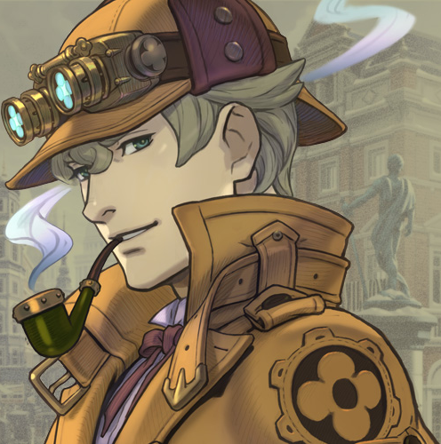

About Me!
- My name is Ashley but you can call me Ash. If you didn't know I'm a Pokemon Master B)
- I'm a second year at UCLA majoring in Business Economics and intending to minor in Data Science Engineering and Digital Humanities.
- I'm actively involved in ACM (specifically the TeachLA and Studio committees), Creative Labs, and DataRes on campus.
- My clubs are a good indication of what I like, but I am interested in accessible education, game development (particularly art and writing), design (I want to learn more!!), and data science.
- I like watching sports in my free time, particularly figure skating, golf, and gymnastics (tennis occasionally).
- I give coffee recommendations on this other page I made: Coffee!
You might be wondering who my Discord profile is. Why, it's the one and only Herlock Sholmes (not Sherlock Holmes due to copyright) from one of my favorite games, The Great Ace Attorney Chronicles. Here he is in all his glory:
Anyway, enough about that; this is for a class after all :)
About Map-Making
My experience with map-making mostly comes from doing data analysis for classes or club projects. I have always found maps to be a great way to show information because they are very capable of telling stories about people and places. However, I've found that the ethical component associated with data is often omitted from classes and clubs, and so my goals for this class are to make meaningful maps that properly represent the communities I'm trying to visualize. I want to make sure that I am not perpetuating power imbalances through my maps.